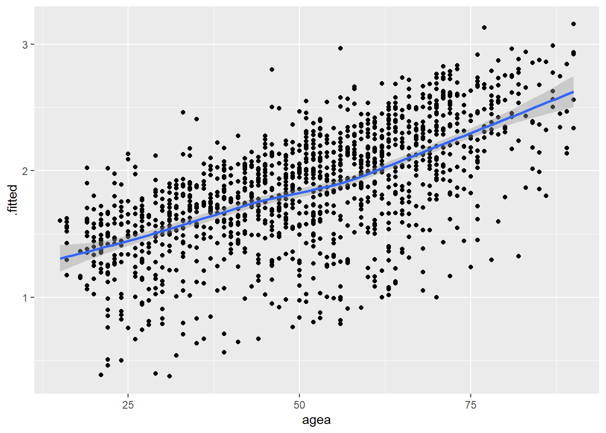
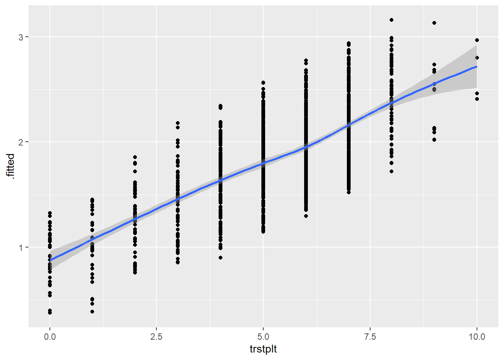
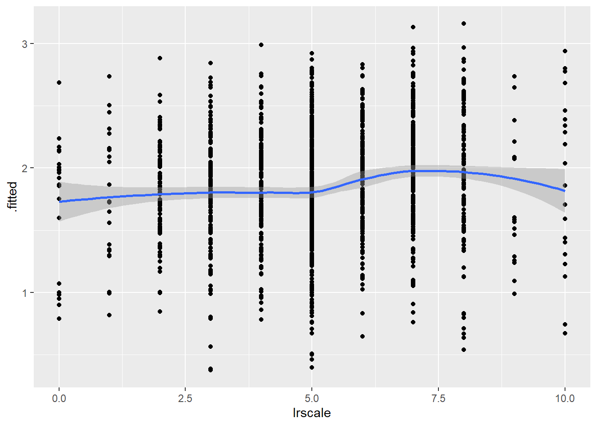
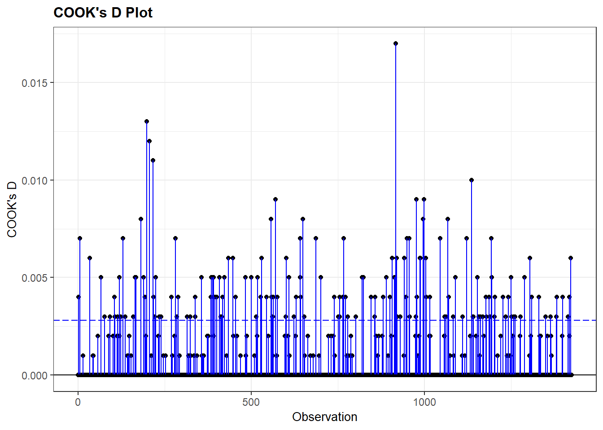

#specifieke packages voor testen assumpties
library(car) #meerdere assumptie testen
library(ggResidpanel) #assumpties testen met grafieken
library(expss) #frequentietabellen maken
#algemene packages
library(rio) #laden van data
library(tidyverse) #data manipulatie en grafieken
library(broom) #data voor residuals en influential cases
#Data
ESS9NL <- import("data/ESS9e03, Netherlands.sav")13 Assumpties van Logistische Regressie
Ook logistische modellen rusten op assumpties. In dit hoofdstuk leren we na te gaan of aan deze assumpties voldaan is. In het bijzonder focussen we op de volgende assumpties:
- Beperkte multicollineariteit
- Lineariteit van de logit
- Beperkte impact ‘outliers’ en ‘influential cases’
We beginnen met het laden van relevante R packages en de data:
We hebben natuurlijk een model nodig. We gebruiken vote_model4 uit het vorige hoofdstuk waarin we de kans voorspellen dat iemand gaat stemmen op basis van informatie over gender, leeftijd, vertouwen in politici en links-rechtsideologie.
#Data management
ESS9NL <- ESS9NL |>
#Factor maken van categorische variabelen
mutate(gndr = factorize(gndr),
vote = factorize(vote)) |>
#Not Eligible op missing zetten
mutate(vote = na_if(vote,"Not eligible to vote")) |>
#Relevel van variabelen
mutate(vote = relevel(vote, "No"),
gndr = relevel(gndr, "Female"))
#Subset van de data
ESS9NL_glm <- ESS9NL |>
filter(complete.cases(vote, gndr, agea, trstplt, lrscale))
#Het model
Vote_model4 <- glm(vote ~ gndr + agea + trstplt + lrscale,
data = ESS9NL_glm, family = "binomial")
#Resultaten
summary(Vote_model4)- 1
- We gebruiken een subset van de data met enkel complete observaties. Dit hebben we gedaan in het vorige hoofdstuk en is ook nuttig voor sommige asumptiechecks..
Call:
glm(formula = vote ~ gndr + agea + trstplt + lrscale, family = "binomial",
data = ESS9NL_glm)
Coefficients:
Estimate Std. Error z value Pr(>|z|)
(Intercept) -0.284194 0.380455 -0.747 0.455
gndrMale 0.043281 0.154201 0.281 0.779
agea 0.018349 0.004503 4.075 4.61e-05 ***
trstplt 0.195020 0.038706 5.039 4.69e-07 ***
lrscale 0.029257 0.039306 0.744 0.457
---
Signif. codes: 0 '***' 0.001 '**' 0.01 '*' 0.05 '.' 0.1 ' ' 1
(Dispersion parameter for binomial family taken to be 1)
Null deviance: 1173.9 on 1424 degrees of freedom
Residual deviance: 1135.3 on 1420 degrees of freedom
AIC: 1145.3
Number of Fisher Scoring iterations: 413.1 Beperkte multicollineariteit
We kunnen nagaan of ons model onderhevig is aan te sterke multicollineariteit met de vif() functie uit het car package. Dit is gelijkaardig aan wat we deden voor lineaire regressie ( Paragraaf 7.2). dezelfde vuistregels zijn van toepassing. Voor logistische regressiemodellen wordt een ‘generalized VIF’ berekend.
vif(Vote_model4) gndr agea trstplt lrscale
1.013505 1.018080 1.019284 1.013647 De resultaten duiden op geen problemen met multicollineariteit.
13.2 Lineariteit van de logit
Logistische regressie verondersteld dat veranderingen in de log odds (de logit) lineair geassocieerd zijn met Y=1. Om de assumptie te checken gebruiken we de augment() functie uit het broom package. Deze functie creëert een dataframe met de variabelen gebruikt in het model, alsook belangrijke statistieken om assumpties te testen:
augment(Vote_model4)# A tibble: 1,425 × 11
vote gndr agea trstplt lrscale .fitted .resid .hat .sigma .cooksd
<fct> <fct> <dbl> <dbl> <dbl> <dbl> <dbl> <dbl> <dbl> <dbl>
1 Yes Female 32 6 5 1.62 0.601 0.00238 0.894 0.0000947
2 No Male 57 7 5 2.32 -2.20 0.00175 0.893 0.00356
3 Yes Female 45 8 5 2.25 0.448 0.00220 0.894 0.0000467
4 Yes Female 34 7 5 1.85 0.540 0.00237 0.894 0.0000749
5 Yes Male 67 6 6 2.33 0.430 0.00188 0.894 0.0000365
6 No Female 85 5 4 2.37 -2.22 0.00330 0.893 0.00710
7 Yes Female 40 7 5 1.96 0.513 0.00199 0.894 0.0000561
8 Yes Male 71 8 7 2.83 0.339 0.00245 0.894 0.0000292
9 Yes Female 84 5 5 2.38 0.421 0.00310 0.894 0.0000577
10 Yes Male 24 7 5 1.71 0.576 0.00360 0.894 0.000131
# ℹ 1,415 more rows
# ℹ 1 more variable: .std.resid <dbl>
Output uitleg
votet.e.m.lrscale: Deze kolommen bevatten de geobserveerde waarden op de betreffende variabelen voor alle observaties gebruikt in het model..fitted: De voorspelde (‘fitted’) waarden op basis van de schattingen in het model in ‘logit’ vorm en dus niet in probabiliteiten..resid: De residuals (fouten/errors) voor elke observatie. Ook gekend als de “deviance residuals”..hat: Diagonaal van de hat matrix (te negeren)..sigma: Geschatte standaardafwijking van de fouten als de observatie uit het model zou worden verwijderd (te negeren).cooksd: Cook’s D waarden (zie onder)..std.resid: gestandaardiseerde residuals (zie onder).
We zullen verder werken met de augment statistieken hier en voor outliers en influential cases dus maken we een nieuw dataobject met de resultaten:
model4_augmented <- augment(Vote_model4, data = ESS9NL_glm)augment(Vote_model4, data=ESS9NL_glm)-
We voegen deze syntax toe aan de functie:
data = ESS9NL_glm. De reden is dat we zo een dataobject creëren met de augment-statistieken, de variabelen gebruikt in het model, en alle overige variabelen in de originele ESS9 dataset. Dit kan nuttig zijn voor bepaalde handelingen. We kunnen enkel de overige variabelen toevoegen als de datasets evenveel rijen hebben. Dit is niet het geval als er missing waarden zijn en het model minder observaties heeft dan de originele dataset. Vandaar dat we eerst eencomplete.casesdata subset hebben gemaakt hierboven.
Om lineariteit te checken plotten we de logit die augment heeft berekend telkens tegenover de onafhankelijke variabelen in het model, specifiek de continue onafhankelijke variabelen. We maken een scatterplot met een loess-lijn en .fittedgeplot op de y-)as.
# Leeftijd
ggplot(model4_augmented, aes(x = agea, y = .fitted)) +
geom_point() +
geom_smooth(method = 'loess')`geom_smooth()` using formula = 'y ~ x'
# Vertrouwen in politici
ggplot(model4_augmented, aes(x = trstplt, y = .fitted)) +
geom_point() +
geom_smooth(method = 'loess')`geom_smooth()` using formula = 'y ~ x'
# LR-ideologie
ggplot(model4_augmented, aes(x = lrscale, y = .fitted)) +
geom_point() +
geom_smooth(method = 'loess')`geom_smooth()` using formula = 'y ~ x'
We gaan na of de loess lijn sterke afwijkingen van een lineaire relatie vertoont. Dit lijkt hier niet het geval.
13.3 Beperkte impact outliers en influential cases
Met de augment functie hebben we reeds de gestandaardiseerde residuals en Cook’s D waarden opgeslagen in een dataobject. We kijken eerst naar outliers, dan naar invloedrijke casussen
13.3.1 Outliers
We bekijken eerst de descriptieve statistieken voor de gestandaardiseerde residuals:
summary(model4_augmented$.std.resid) Min. 1st Qu. Median Mean 3rd Qu. Max.
-2.3983 0.4104 0.5040 0.1870 0.5916 1.0319 De output helpt ons na te gaan of er observaties zijn die de drempelwaarden (|1.96|, |2.58|, |3.29|) overschrijden. We zien dat de hoogste drempelwaarden (|2.58|, |3.29|) niet overschreden worden maar de laagste van 1.96 wel (het minimum is -2.398). Nu moeten we nog weten hoeveel observaties deze waarde overschrijden.
Dit kunnen we nagaan door net zoals bij lineaire regressie een dummy variabele te maken (0 = .std.resid < |1.96|, 1 = .std.resid > |1.96|) en de frequentietabel te inspecteren. 1 (zie Paragraaf 7.6.1 voor de syntax voor de andere drempelwaarden)
#dummy variabele maken:
model4_augmented <- model4_augmented |>
mutate(SRE1.96 = case_when(
.std.resid > 1.96 | .std.resid < -1.96 ~ 1,
.std.resid > -1.96 & .std.resid < 1.96 ~ 0
))
#proportie opzoeken
fre(model4_augmented$SRE1.96)| model4_augmented$SRE1.96 | Count | Valid percent | Percent | Responses, % | Cumulative responses, % |
|---|---|---|---|---|---|
| 0 | 1344 | 94.3 | 94.3 | 94.3 | 94.3 |
| 1 | 81 | 5.7 | 5.7 | 5.7 | 100.0 |
| #Total | 1425 | 100 | 100 | 100 | |
| <NA> | 0 | 0.0 |
5.7% van de observaties liggen buiten het +/- 1.96 interval. Om te onderzoeken of deze outliers de parameters van het model beïnvloeden, kunnen we het model opnieuw schatten zonder deze observaties. We doen dit door in onze dataset enkel observaties met een waarde van ‘0’ op SRE1.96 op te nemen. We zouden dan de resultaten van het model met en het model zonder outliers vergelijken:
Vote_model41.96 <- glm(vote ~ gndr + agea + trstplt + lrscale,
data = subset(model4_augmented, SRE1.96 == 0),
family = "binomial")13.3.2 Influential cases
Om te onderzoeken of er invloedrijke casussen aanwezig zijn inspecteren we de Cook’s D waarden van de observaties in het model. We kunnen de descriptieve statistieken bekijken en het Cook’s D plot via de resid_panel() funtie uit het ggResidpanel package. We hanteren dezelfde vuistregels als voor lineaire regressie (zie Paragraaf 7.6.2).
#Summary of the Cook's D values
summary(model4_augmented$.cooksd) Min. 1st Qu. Median Mean 3rd Qu. Max.
2.331e-05 5.117e-05 8.959e-05 7.085e-04 2.442e-04 1.668e-02 #Plot
resid_panel(Vote_model4, plots = c('cookd'))Warning in helper_plotly_label(model): NAs introduced by coercion
Warning in helper_plotly_label(model): NAs introduced by coercion
Beide methoden wijzen op lage Cook’s D waarden; de maximum waarde is slechts 0.017. Indien we hogere waarden zouden vinden, zouden we deze observaties uit de dataset kunnen filteren en het model opnieuw schatten om resultaten met en zonder invloedrijke casussen te vergelijken
We zouden ook het gemiddelde van de 0/1 variabele kunnen berekenen gezien dit ons de proportie zou geven voor de ‘1’ cases.↩︎